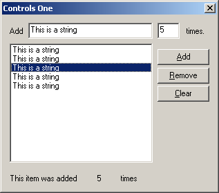

Example: ctl_one
I realize I've already used buttons in previous examples, so you should already be more or less familiar with them, however I figured that since I was using them in this example I might as well add it to the title for the sake of being complete.
One thing to remember about controls is that they are just windows. Like any other window they have a window procedure, a window class etc... that is registered by the system. Anything you can do with a normal window you can do with a control.
As you may remember from our earlier discussion of the message loop, windows communicate using messages,
you send them to get a control to do something, and when an event occurs on the control it
will send you a notification message back.
For the standard controls this notification will be a WM_COMMAND message as we've
already seen with buttons and menus. For the Common Controls which I may get to later,
it will be WM_NOTIFY.
The messages you send are widely varied between each control, and each control has it's own set
of messages. Once in a while the same message will be used for more than one kind of control,
but in general they will only work on the control they are intended for. This is especially
annoying with the listbox and combobox messages (LB_* and CB_*) which although
they perform nearly identical tasks, are NOT interchangeable,
and I accidently get them mixed up more than I'd like to admit :)
On the other hand, generic messages like WM_SETTEXT are supported by almost all
controls. A control is just a window after all.
You can send messages using the SendMessage() API, and use GetDlgItem()
to retreive the handle to the control, or you can use SendDlgItemMessage() which
does both steps for you, the results of both methods are identical.
One of the most commonly used controls in the windows environment, the EDIT control, is used to allow the user to enter, modify, copy, etc... text. Windows Notepad is little more than a plain old window with a big edit control inside it.
Here is the code used to interface with the edit control in this example:
SetDlgItemText(hwnd, IDC_TEXT, "This is a string");
That's all it takes to change the text contained in the control (this can be used for pretty
much any control that has a text value associated with it, STATICs, BUTTONs and so on).
Retreiving the text from the control is easy as well, although slightly more work than setting it...
int len = GetWindowTextLength(GetDlgItem(hwnd, IDC_TEXT));
if(len > 0)
{
int i;
char* buf;
buf = (char*)GlobalAlloc(GPTR, len + 1);
GetDlgItemText(hwnd, IDC_TEXT, buf, len + 1);
//... do stuff with text ...
GlobalFree((HANDLE)buf);
}
First of all, we need to allocate some memory to store the string in, it won't just return us
a pointer to the string already in memory. In order to do this, we first need to know how
much memory to allocate. There isn't a GetDlgItemTextLength(), but there is a
GetWindowTextLength(), so all we need to do it get the handle to the control
yourself using GetDlgItem().
Now that we have the length, we can allocate some
memory. Here I've added a check to see if there is any text to begin with, since most likely
you don't want to be working with an empty string... sometimes you might, but that's up to you.
Assuming that there is something there to work with, we call GlobalAlloc()
to allocate some memory. GlobalAlloc() as I've used it here is equivalent to
calloc(), if you're used to DOS/UNIX coding. It allocates some memory, initializes
it's contents to 0 and returns a pointer to that memory. There are different
flags you can pass as the first paramter to make it behave differently for different purposes,
but this is the only way I will be using it in this tutorial.
Note that I added 1 to the length in two places, what's up with that? Well,
GetWindowTextLength() returns the number of characters of text the control contains
NOT INCLUDING the null terminator. This means that if we were to allocate a string without
adding 1, the text would fit, but the null terminator would overflow the memory
block, possibly corrupting other data, causing an access violation, or any number of other
bad things. You must be careful when dealing with string sizes in windows, some APIs and
messages expect text lengths to include the null and others don't, always read the docs
thoroughly.
If I lost you talking about null terminators, please refer to a basic C book or tutorial which discusses strings.
Finally we can call GetDlgItemText() to retrieve the contents of the control
into the memory buffer that we've just allocated. This call expects the size of the buffer
INCLUDING the null terminator. The return value, which we ignored here, is the number of
characters copied, NOT including the null terminator.... fun eh? :)
After we're all done using the text (which we'll get to in a moment), we need to free up
the memory that we allocated so that it doesn't leak out and drip down onto the CPU and
short circuit your computer. To accomplish this, we simply call GlobalFree()
and pass in our pointer.
You may be or become aware of a second set of APIs named LocalAlloc(),
LocalFree(), etc... which are legacy APIs from 16-bit windows. In Win32,
the Local* and Global* memory functions are identical.
Entering text is all well and fine, but what if you want the user to enter in a number? This is a pretty common task, and fortunately there is an API to make this simpler, which takes care of all the memory allocation, as well as converting the string to an integer value.
BOOL bSuccess;
int nTimes = GetDlgItemInt(hwnd, IDC_NUMBER, &bSuccess, FALSE);
GetDlgItemInt() works much like GetDlgItemText(), except that
instead of copying the string to a buffer, it converts it internally into an integer and
returns the value to you. The third parameter is optional, and takes a pointer to a BOOL.
Since the function returns 0 on failure, there is no way to tell just from that whether
or not the function failed or the user just entered 0. If you are fine with a
value of 0 in the event of an error, then feel free to ignore this parameter.
Another useful feature is the ES_NUMBER style for edit controls, which allows
only the characters 0 through 9 to be entered. This is very handy if you only want positive
integers, otherwise it's not much good, since you can't enter any other characters, including
- (minus) . (decimel) or , (comma).
Another handy control is the list box. This is the last standard control that I'm going to cover for now, cause frankly they aren't that interesting, and if you aren't bored yet well, I am :)
The first thing you'll want to do with a listbox is add items to it.
int index = SendDlgItemMessage(hwnd, IDC_LIST, LB_ADDSTRING, 0, (LPARAM)"Hi there!");
As you can see, this is a pretty simple task. If the listbox has the LBS_SORT style, the new
item will be added in alphabetical order, otherwise it will just be added to the end of the
list.
This message returns the index of the new item either way, and we can use this to perform other tasks on the item, such as associating some data with it. Usually this will be things like a pointer to a struct containing more information, or maybe an ID that you will use to identify the item, it's up to you.
SendDlgItemMessage(hwnd, IDC_LIST, LB_SETITEMDATA, (WPARAM)index, (LPARAM)nTimes);
The whole purpose of listboxes is to allow the user to select things from a list. Now sometimes we don't care when exactly they do this, for example with our Remove button, we don't need to know when the selection changes right away, we just check when the user activates the button.
However, sometimes you want to be able to do something right away, perhaps
display different or updated information based on what items are selected. In order to do
this we need to handle the notification messages that the listbox passes to us. In this
case, we are interested in LBN_SELCHANGE, which tells us that the selection
has been modified by the user. LBN_SELCHANGE is sent via WM_COMMAND
but unlike handling the WM_COMMAND from buttons or menu's, which are usually only
in response to a click, a list box sends WM_COMMAND for various reasons, and we
need a second check to find out what it's telling us. The Notification Code is passed
as the HIWORD of wParam, the other half of the parameter that
gave us the control ID in the first place.
case WM_COMMAND:
switch(LOWORD(wParam))
{
case IDC_LIST:
// It's our listbox, check the notification code
switch(HIWORD(wParam))
{
case LBN_SELCHANGE:
// Selection changed, do stuff here.
break;
}
break;
// ... other controls
}
break;
In this example I've used a multiselection list box, so getting the list of selected items
is a little trickier. If it were a single selection listbox, than you could simply send
LB_GETCURSEL to retrieve the item index.
First we need to get the number of selected items, so that we can allocate a buffer to save the indexes in.
HWND hList = GetDlgItem(hwnd, IDC_LIST);
int count = SendMessage(hList, LB_GETSELCOUNT, 0, 0);
Then we allocate a buffer based on the number of items, and send LB_GETSELITEMS
to fill in the array.
int *buf = GlobalAlloc(GPTR, sizeof(int) * count);
SendMessage(hList, LB_GETSELITEMS, (WPARAM)count, (LPARAM)buf);
// ... Do stuff with indexes
GlobalFree(buf);
In this example, buf[0] is the first index, and so on up to
buf[count - 1].
One of the things you would likely want to do with this list of indexes, is retreive the data associated with each item, and do some processing with it. This is just as simple as setting the data was originally, we just send another message.
int data = SendMessage(hList, LB_GETITEMDATA, (WPARAM)index, 0);
If the data was some other type of value (anything that is 32-bits) you could simply cast
to the appropriate type.
For example if you stored HBITMAPs instead of ints...
HBITMAP hData = (HBITMAP)SendMessage(hList, LB_GETITEMDATA, (WPARAM)index, 0);
IDC_STATIC, which is -1 and effectively means "No ID")
and then setting the text at runtime to present dynamic data to the user.
In the example code, I use one to display the data of the item selected in the list box, assuming one and only one is selected.
SetDlgItemInt(hwnd, IDC_SHOWCOUNT, data, FALSE);